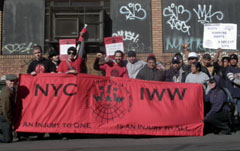

Immigrants Rising in Brooklyn
Submitted on Wed, 05/17/2006 - 12:32pm
By Erin Thompson - reposted from the Indypendent, May 10, 2006.
A smell of wet garbage emanated from a paste of rotten fruit, cucumbers and smashed olives that clung to the sidewalk in front of Amersino Marketing Group, an anonymous building amid a row of squat warehouses in Ridgewood, Queens. Like most mornings, on Monday May 1, Eliezer Maca arrived at 5:30 a.m. at the warehouse, where he spends six days a week loading trucks ferrying supplies to New York’s Chinese restaurant industry.
Today, however, Maca was not here to work.
Having been fired on April 29 by the owner, he was flanked by a handful of youthful, scarletemblazoned members of the Industrial Workers of the World (IWW) and a dozen coworkers, forming an enthusiastic picket line. It was the fifth such picket at the company in as many weeks, as workers took to heart the direct action and worker-lead strikes characteristic of the IWW.
“He fire me because I cancel too [many] people,” said Maca, who as the observer for the April 28 union election, had invalidated ballots cast by people he said did not work at the company. “Never I see the people,” said Maca, referring to the workers he claimed were brought in by the owner that day. “I working for him three years – and I know who work and who [doesn’t] work in this company.” These Hispanic immigrant workers are members of the IWW and part of the Despierta Bushwick campaign, launched by Bushwick community organization Se Hace Camino Al Andar (Make the Road By Walking), which through its campaigns to unionize Bushwick’s wholesale and retail sectors, has demonstrated how issues of economic justice and immigrants’ rights are intertwined.
THE WAGES OF IMMIGRANTS
The interconnection is visible on Knickerbocker Avenue in Bushwick, which is lined with discount stores that sell to Latin American immigrants earning low wages. The main thoroughfare has been nicknamed “the street of shame” for store owners’ routine violation of minimum wage laws.
Bert Picard, a Make the Road member active in the IWW campaign, says it “seems that there’s a de facto new minimum wage for immigrants” who by his calculations often earn under $5.00 an hour. The New York state minimum wage is currently $6.75 an hour and will rise to $7.15 in 2007.
In December 2004, Make the Road launched its Despierta Bushwick campaign – Awake Bushwick – to combat the endemic illegal labor practices in the neighborhood. Prior to that, Make the Road By Walking focused on helping immigrant members “reclaim or defend their workplace rights,” said co-director Andrew Friedman. “A lot of times we’d work with people once they’d already been fired to help them get back wages and overtime pay.”
The campaign was launched after a prolonged struggle to recover back wages for workers from a local retailer Minimax.Workers who said they had endured years of abuse, subminimum wages, overtime violations and unfair firings. They approached Make the Road about their situation and after six months of boycotts, protests and leafleting, eight workers reached a settlement with the owner in 2004 to receive $65,000 total in back wages and overtime pay.
It was a major victory for the workers, but, “we weren’t strong enough to get them rehired. We didn’t have the power to force them [the owner] to take them back,” said Picard. When organizers interviewed workers in the neighborhood, “the vast majority of them said, ‘We want significant wage increases and we want health insurance,’” according to Friedman. “We felt like we would not be able to get those two things unless we collaborated with the union.”
The group began reaching out to unions, eventually forming a partnership with the Retail, Wholesale and Department Store Union (RWDSU) to unionize Bushwick’s retail sector and with the IWW to unionize workers in the wholesale sector. The Despierta Campaign mobilized a doorknocking campaign to educate the community about their efforts for fair labor practices and to gather pledges to support boycotts against local businesses exploiting workers. When the project began a boycott of Super Star 99, whose owner was paying workers $4 an hour, the store was shut down for a week. Eventually, the owner tried to close down the store, only to be ordered by New York State Attorney General Eliot Spitzer to reopen, rehire workers and pay $70,000 in back wages. Workers in Action also managed to win $28,000 for four employees of S and S Farm, a greengrocer that paid its workers $340 or less for 70-hour workweeks.
The group then began organizing the Footco shoe chain, which has 10 stores across the city, including two on Knickerbocker. The owner was paying workers $4 an hour with no overtime, health benefits, paid vacation or sick days. The group threatened a community boycott of the store, and the owner, having seen the effect of the campaign against Super Star 99, quickly signed an agreement. “I remember when we announced that we [were starting] to do demonstration in front of the store. They called us and said… stop doing that and they signed a good business agreement,” said Make the Road organizer Nieves Padilla. The owner of the store promised to “respect the community… respect the campaign,” said Padilla. “If the worker desires to be unionized they’re going to respect that. …Finally after the few months, we got the first local union in Bushwick.”
Make the Road reached an agreement with Footco for it to pay $410,000 in back pay for wage and overtime violations. All 10 stores and an estimated 100 workers are now unionized with a three-year contract that guarantees $7.25 an hour, paid vacation and sick leave, health insurance for their families and mandatory breaks. The RWDSU is now looking to launch another major campaign on Knickerbocker.
In organizing workers and focusing on improving life for the community as a whole, Made the Road By Walking and the two unions have set themselves apart from many other union campaigns, which often, though not always, fail to involve community groups, and focus on larger chains and corporations, rather than small businesses.
WHOLESALE ORGANIZING
“We believe that every worker, if they need help, we are here to provide that,” said Padilla, who heads the Despierta Bushwick campaign. “It doesn’t matter where they work.” Indeed, Despierta Bushwick is moving beyond the neighborhood retail sector.
Teresa Perez, an immigrant from Mexico and a member of Make the Road began working a few months ago as a cashier at K. Bread & Co., a mid-Manhattan coffee shop. She said workers received “extremely bad treatment” from the owner. Perez was being paid $6 an hour working without overtime for a 48-hour workweek. “He yelled at us, he gave us too much work,” said Orlando Guevera, a dishwasher and cashier at K. Break and Co. who emigrated from Mexico three years ago. He was being paid $6.50 an hour for 60-hour weeks with no overtime. Perez brought her complaint to Make the Road By Walking, and with the help of the Industrial Workers of the World, the workers started unionizing. They now have a union, are being paid minimum wage and overtime, and are waiting to negotiate a contract. Perez and other workers are demanding paid holidays, sick days and vacation days and an increase in wages “because $6.75 is not a living wage.”
INDUSTRIAL WORKERS OF BUSHWICK UNITE
“[We want] better pay, benefits, holidays, and [above] everything, dignity and respect for the immigrants,” said Antonio Rodriguez, who was fired for defending Eliezer Maca at Amersino. “We are here to work – and we need more respect.”
Rodriguez is an immigrant from Mexico and says doesn’t he really like the United States but came in order to earn enough money to go to college. “I don’t have money in Mexico so that’s why I am here,” said Rodriguez. “Maybe in… three years I would like to go back to Mexico to study medicine.”
Until a few months ago, when unionizing activities started, Rodriguez was working 60 hours a week, but making only $330. For these workers, unionizing is one of the only means of getting paid the legal minimum wage. Rodriguez now makes $6.75 an hour. According to IWW organizer Billy Randel, the workers at Amersino began receiving the minimum wage in late March, after the union made a demand for recognition. After being approached by the IWW and Make the Road, the workers, who had filed a complaint with the state department of labor about minimum wage violations, decided to form a union. On Friday, April 28, they held an election.
The next morning, Eliezer Maca, an immigrant from Mexico who had been observing the election for the union, was fired when he showed up to work. Owner Yu Qing Wang admitted that he had been violating minimum wage law in the past, but that he was now paying the minimum wage.
“That’s not true,” he said when asked if he currently violated minimum wage law. “Before maybe, but we are making the correction already,” he told The Indypendent. Wang denied that this “correction” had anything to do with the union, saying, “We already tell the people that because of a minimum wage law we may have to make certain corrections and do what the right thing to do – not because of the union.”
But the battle has been difficult for the workers. Union members returned to work on May 3 after negotiating with Wang. He refused to take back Maca or Rodriguez and fired two more unionized employees.
On May 8, a week after their last picket, the IWW arrived at Amersino at 5am, to show support for the workers who had gone back to work the week before. They were expecting the fired workers to join them on a picket line, but most were out looking for work. Maca was the only one who showed up. But, he expressed hope and saw the recent immigrants’ rights movement as a sign that many like him were ready for a change.
“People have been working here for a long time,” said Maca in Spanish. “They want some change… to have the opportunity for a better chance at making a living and raising family here. And they can’t do that without a change in the law.”
Tapping into the power of direct action, community boycotts and grassroots organizing, Make the Road By Walking’s workplace justice campaigns have escalated since 2003 from fighting for the enforcement of minimal labor standards to full-scale efforts to unionize previously exploitative businesses.
MINIMAX – MARCH 2004
Eight workers win $65,000 in back wages. The workers had endured verbal abuse, wage and overtime violations and some claimed they were unfairly terminated.
S AND S FARM – MARCH 2005
Greengrocer employees working 70 hour weeks for 300 and 340 dollars a week, win $28,852 in back wages. The workers now receive overtime and minimum wage, allowing them to work 24 fewer hours a week for the same amount of money.
SUPER STAR 99 INC.; LESS & PLUS DISCOUNT INC.; JIMMY 99 CENTS INC. – AUGUST 2005
Employees of the three stores win $70,000 in back wages. Workers now receive minimum wage and overtime pay, and are given three paid sick days and three vacation days per year.
FOOTCO USA – JANUARY 2006
Ninety-five workers win $410,000 in back wages for overtime and minimum wage violations and all 10 stores in the city are successfully unionized. The new contract was signed in January 2006 – workers now receive $7.25 an hour, vacation and sick days, health insurance and an employee discount, as well as guaranteed five hours a week of overtime.
K. BREAD & CO — IWW WINS UNION ELECTION APRIL 7
Fourteen workers at this Midtown bakery successfully organize a union, and are now being paid minimum wage and overtime, and are waiting to negotiate a contract with benefits, that include paid holidays, sick days and vacations.
EZ SUPPLY CO. – IWW WINS UNION ELECTION FEBRUARY 9
At this wholesale restaurant supply and food company, 23 workers decide to unionize after approaching Make the Road with complaints of wage minimum violations and a lack of respect for the workers. The workers held two strikes during the unionizing effort and are now in contract negotiations.
AMERSINO MARKETING GROUP, LLC - IWW HOLDS UNION ELECTIONS APRIL 28
Workers at this wholesale food supply company begin unionizing in February 2006, claiming wage and overtime violations against the owner, who had been paying workers as little as $300 for 60- hour weeks. Since the union made a demand for recognition in March, the owner has raised wages to $6.75 an hour.